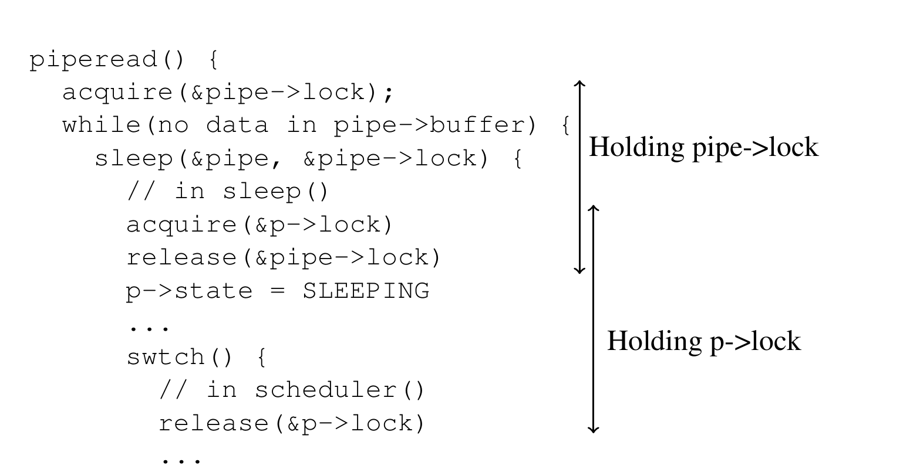

第 9 章 睡眠与唤醒
调度和锁有助于隐藏一个线程对另一个线程的影响，但我们还需要帮助线程有意交互的抽象。例如，xv6 中管道的读者可能需要等待写进程产生数据；父进程的 wait 调用可能需要等待子进程退出；读取磁盘的进程需要等待磁盘硬件完成读操作。xv6 内核在这些场景（以及许多其他场景）中使用称为睡眠与唤醒（sleep and wakeup）的机制。sleep 允许内核线程等待某个条件变为真；另一个线程或中断处理程序可以让该条件变真（通常通过修改某些变量），然后调用 wakeup 表示等待该条件的线程应该恢复。sleep 和 wakeup 常称为顺序协调或条件同步机制。
继续之前，请阅读 kernel/proc.c 中的 sleep() 和 wakeup()，以及整个 kernel/pipe.c 文件。
9.1 概览
sleep/wakeup 接口如下：
void sleep(void *chan, struct spinlock *lk)
void wakeup(void *chan)sleep() 把调用进程标记为 SLEEPING（不是 RUNNABLE），并通过上下文切换到调度器释放 CPU，使其他进程可以运行。chan 参数称为等待通道。wakeup(chan) 会唤醒所有（如果有）曾用同一 chan 值调用 sleep(chan, ...) 的进程。sleep 和 wakeup 把 chan 看作不透明的 64 位值；它们唯一做的事是比较相等。调用者通常把某个方便对象的地址作为 chan 参数传入。
内核代码调用 sleep 等待某个条件变真。例如，从管道读取的内核代码在管道缓冲区当前为空时调用 sleep；这里的条件是管道缓冲区变为非空（由于另一个进程向管道写入）。sleep 和 wakeup 不知道条件是什么：只有调用代码知道。通常模式是调用者先检查条件，如果条件不真则调用 sleep；之后使条件变真的代码调用 wakeup。
下面是 xv6 内核管道代码如何使用 sleep 和 wakeup 的草图：
piperead(pipe){
acquire(&pipe->lock);
while(there's no data in pipe->buffer){
// ZZZ
sleep(&pipe, &pipe->lock);
}
remove the data from the pipe;
release(&pipe->lock);
}
pipewrite(pipe){
acquire(&pipe->lock);
append data to pipe->buffer;
wakeup(&pipe);
release(&pipe->lock);
}这段代码用管道数据结构的地址作为等待通道。
sleep 的 lk 参数是什么？在所有 sleep/wakeup 用法中，条件都涉及共享数据，这些数据由睡眠线程和调用 wakeup 的线程共同使用，因此总会有一把锁保护该条件。这把锁称为条件锁。在上面的管道代码中，两个函数都在持有管道锁时使用管道及其缓冲区，所以管道锁在这里也是条件锁。规则是，任何调用 sleep 或 wakeup 的代码都必须持有条件锁，并且必须把该锁作为第二个参数传给 sleep。
调用 sleep 时必须持有条件锁，并且必须把它传给 sleep，是为了防止另一个线程在检查条件和调用 sleep 之间调用 wakeup。如果此时调用 wakeup，它会找不到睡眠进程可唤醒，只是返回。但随后 sleep 的调用可能永远不会醒来，因为本该唤醒它的 wakeup 已经发生。这种不希望出现的情况称为丢失唤醒。
在上面的管道例子中，要避免的丢失唤醒是：另一个 CPU 上的线程可能在标记为 ZZZ 的点，即 piperead 检查条件之后、调用 sleep 之前调用 pipewrite。piperead 在检查条件到调用 sleep 之间持有管道锁，这会阻止 pipewrite 执行，从而防止丢失唤醒。
sleep() 释放条件锁，使调用 wakeup() 的代码可以继续执行。sleep() 还会上下文切换到调度器，让其他线程在它等待期间运行。实现会以相对于 wakeup() 原子的方式执行这两步，以防止丢失唤醒。
9.2 代码：sleep 和 wakeup
xv6 的 sleep (2703) 和 wakeup (2734) 实现了上面例子使用的接口。基本思想是让 sleep 把当前进程标记为 SLEEPING，然后调用 sched 释放 CPU；wakeup 查找在给定等待通道上睡眠的进程，并把它标记为 RUNNABLE。

sleep 先获取 p->lock (2714)，然后才释放条件锁 lk。sleep 始终持有这两把锁中的至少一把，这正是防止并发 wakeup（它必须获取并持有二者）产生丢失唤醒的关键。此时 sleep 只持有 p->lock，可以通过记录等待通道、把进程状态改为 SLEEPING，并调用 sched 来让进程睡眠 (2718-2721)。很快会看到，p->lock 必须直到进程被标记为 SLEEPING 之后才由调度器释放。
某个时刻，一个进程会获取条件锁，设置睡眠者等待的条件，并调用 wakeup(chan)。重要的是，应在持有条件锁时调用 wakeup1。wakeup 遍历进程表 (2734)，获取它检查的每个进程的 p->lock。当 wakeup 发现某个进程处于 SLEEPING 状态且 chan 匹配时，就把该进程状态改为 RUNNABLE。下次调度器运行时，会看到该进程已经准备运行。
为什么 sleep 和 wakeup 的加锁规则能保证即将睡眠的进程不会错过并发唤醒？即将睡眠的进程从检查条件前直到把自己标记为 SLEEPING 后，始终持有条件锁或自己的 p->lock，或者二者都持有；见图 9.1。调用 wakeup 的唤醒者需要获取这两把锁。唤醒者可能先获取锁，这意味着它会在消费线程检查条件之前使条件为真，于是消费线程不需要调用 sleep()；或者唤醒者的 acquire() 必须等到消费线程完全睡眠并释放锁后才能完成，这时唤醒者会看到消费线程已标记为 SLEEPING 并唤醒它。
有时多个进程睡在同一个通道上；例如多个进程从同一管道读取。一次 wakeup 会把它们全都唤醒。其中一个会先运行并获取 sleep 调用时传入的锁，并读取等待的数据。其他进程会发现虽然被唤醒，但已经没有数据可读。从它们角度看，这次唤醒是“虚假的”，必须再次睡眠。因此 sleep 总是放在重新检查条件的循环中调用。
如果两个 sleep/wakeup 用法意外选择了相同通道，也不会造成伤害：它们会看到虚假唤醒，但上述循环会容忍这个问题。sleep/wakeup 的魅力很大一部分在于它既轻量（不需要创建特殊数据结构作为等待通道），又提供一层间接性（调用者不必知道正在与哪个具体进程交互）。
9.3 代码：管道
xv6 的管道是使用 sleep 和 wakeup 同步生产者与消费者的代码示例。第 1 章已经见过管道接口：写入管道一端的字节被复制到内核缓冲区，然后可以从管道另一端读出。后续章节会考察管道周围的文件描述符支持，这里先看 pipewrite 和 piperead 的实现。
每个管道由 struct pipe 表示，它包含一把锁和一个数据缓冲区。字段 nread 和 nwrite 统计从缓冲区读取和写入的总字节数。缓冲区会环绕：buf[PIPESIZE-1] 之后写入的下一个字节是 buf[0]。计数不会环绕。这个约定让实现可以区分满缓冲区（nwrite == nread+PIPESIZE）和空缓冲区（nwrite == nread），但也意味着索引缓冲区时必须使用 buf[nread % PIPESIZE] 而不是 buf[nread]（nwrite 类似）。
假设 piperead 和 pipewrite 在两个不同 CPU 上同时发生。pipewrite (6679) 首先获取管道锁，这把锁保护计数、数据及其相关不变量。随后 piperead (6708) 也尝试获取锁，但不能成功；它在 acquire 中自旋等待锁。piperead 等待期间，pipewrite 遍历要写入的字节（addr[0..n-1]），逐个加入管道 (6697)。循环期间缓冲区可能填满 (6690)。此时 pipewrite 调用 wakeup 通知任何睡眠读者有数据在缓冲区中等待，然后在 &pi->nwrite 上睡眠，等待读者从缓冲区取出一些字节。sleep 会在让 pipewrite 的进程睡眠时释放管道锁。
现在 piperead 获取管道锁并进入临界区：它发现 pi->nread != pi->nwrite (6715)（pipewrite 睡眠是因为 pi->nwrite == pi->nread + PIPESIZE），于是进入循环，把数据从管道复制出来 (6722)，并按复制的字节数递增 nread。缓冲区中这些空间现在可供写入，所以 piperead 返回前调用 wakeup 唤醒任何睡眠写者 (6729)。wakeup 找到睡在 &pi->nwrite 上的进程，也就是缓冲区填满时运行 pipewrite 并停止的进程，把它标记为 RUNNABLE。
管道代码为读者和写者使用不同等待通道（pi->nread 和 pi->nwrite）；如果大量读者和写者在同一管道上等待，这可能提高效率。管道代码在检查睡眠条件的循环中睡眠；如果有多个读者或写者，除了第一个醒来的进程，其余进程会看到条件为假并再次睡眠。
9.4 代码：wait、exit 和 kill
请阅读 kernel/proc.c 中的 kwait()、kexit() 和 kkill()；它们是对应系统调用的内部实现。
sleep 和 wakeup 可以用于许多等待。第 1 章介绍过的一个有趣例子是子进程 exit 与父进程 wait 之间的交互。子进程死亡时，父进程可能已经睡在 wait 中，也可能正在做别的事；后一种情况下，之后的 wait 调用必须观察到子进程死亡，哪怕距离 exit 调用已经过了很久。xv6 记录子进程死亡直到 wait 观察到它的方式，是让 exit 把调用者放入 ZOMBIE 状态，直到父进程的 wait 注意到它，把子进程状态改为 UNUSED，复制子进程退出状态，并把子进程 PID 返回给父进程。如果父进程先于子进程退出，父进程会把子进程交给 init 进程，后者会永久调用 wait；因此每个子进程都有父进程负责清理它。挑战是避免同时发生的父进程 wait 和子进程 exit，以及同时发生的 exit 和 exit 之间的竞争和死锁。
kwait 是 wait 的内核实现，开始时获取 wait_lock (2503)，它充当条件锁，帮助确保 kwait 不会错过退出子进程的唤醒。随后 kwait 扫描进程表。如果找到 ZOMBIE 状态的子进程，它会释放该子进程资源及其 proc 结构，把子进程退出状态复制到 wait 提供的地址（如果地址不是 0），并返回子进程 PID。如果 kwait 找到子进程但没有已退出的，它调用 sleep 等待任意子进程退出 (2545)，然后重新扫描。kwait 常常持有两把锁：wait_lock 和某个进程的 pp->lock；避免死锁的顺序是先 wait_lock，再 pp->lock。
kexit (2454) 记录退出状态，释放一些资源，调用 reparent 把所有子进程交给 init，唤醒父进程以防它在 wait 中，把调用者标记为僵尸，并永久让出 CPU。kexit 在这个序列中持有 wait_lock 和 p->lock。它持有 wait_lock，因为这是 wakeup(p->parent) 的条件锁，能防止 wait 中的父进程丢失唤醒。kexit 也必须在这个序列中持有 p->lock，以防父进程在 wait 中看到子进程处于 ZOMBIE 状态，而子进程尚未最终调用 swtch。kexit 与 kwait 按相同顺序获取这些锁，以避免死锁。
kexit 在把自身状态设为 ZOMBIE 之前唤醒父进程看起来可能不正确，但这是安全的：虽然 wakeup 可能使父进程运行，父进程 kwait 中的循环在子进程的 p->lock 被调度器释放前无法检查子进程；所以 kwait 只有在 kexit 已把状态设为 ZOMBIE 后才能查看退出进程 (2486)。
exit 允许进程终止自己，而 kill 系统调用 (2754) 允许一个进程请求另一个进程终止。让 kill 直接销毁受害进程会过于复杂，因为受害进程可能正在另一个 CPU 上执行，甚至处于更新内核数据结构的敏感序列中。因此 kkill 做得很少：它只设置受害进程的 p->killed，如果该进程正在睡眠则唤醒它。最终受害进程会进入或离开内核，此时 usertrap 中的代码会在 p->killed 被设置时调用 kexit（通过调用 killed (2783) 检查）。如果受害进程在用户空间运行，它会在下一次通过系统调用进入内核，或因定时器（或其他设备）中断进入内核时，发现自己已被杀死。
如果受害进程在 sleep 中，kkill 对 wakeup 的调用会使它从 sleep 返回。这有潜在危险，因为正在等待的条件可能并不为真。不过 xv6 对 sleep 的调用总是包在重新测试条件的 while 循环中。有些 sleep 调用还在循环中测试 p->killed，并在设置时放弃当前活动；只有在这种放弃正确时才这样做。例如管道读写代码 (6686) 在 killed 标志设置时返回；最终代码会回到 trap，trap 会再次检查 p->killed 并退出。
有些 xv6 睡眠循环不检查 p->killed，因为代码处于一个多步骤系统调用中，应该保持原子性（中途放弃会不正确）。virtio 驱动 (7688) 就是例子：它不检查 p->killed，因为一次磁盘操作可能是一组写的一部分，而这些写全部完成才能让文件系统保持正确状态。一个在等待磁盘 I/O 时被杀死的进程，不会退出，直到它完成当前系统调用并且 usertrap 看到 killed 标志。
9.5 进程锁
每个进程关联的锁（p->lock）是 xv6 中最复杂的锁。理解 p->lock 的一个简单方法是：读写以下 struct proc 字段时必须持有它：p->state、p->chan、p->killed、p->xstate 和 p->pid。这些字段可能被其他进程或其他 CPU 上的调度器线程使用，因此自然需要由锁保护。
不过，p->lock 的多数用途是在保护 xv6 进程数据结构和算法的更高层不变量。完整地说，p->lock 做了这些事：与 p->state 一起防止为新进程分配 proc[] 槽位时的竞争；在进程创建或销毁时把它从视图中隐藏；防止父进程 wait 收集一个已经把状态设为 ZOMBIE 但尚未让出 CPU 的进程；防止另一个 CPU 的调度器在一个正在让出的进程把状态设为 RUNNABLE 后、完成 swtch 前决定运行它；确保只有一个 CPU 的调度器决定运行某个 RUNNABLE 进程；防止定时器中断使进程在 swtch 中让出；与条件锁一起帮助防止 wakeup 忽略正在调用 sleep 但尚未完成让出 CPU 的进程；防止 kill 的受害进程在 kkill 检查 p->pid 和设置 p->killed 之间退出并可能被重新分配；并使 kkill 对 p->state 的检查和写入保持原子。
p->parent 字段由全局锁 wait_lock 保护，而不是由 p->lock 保护。只有进程的父进程会修改 p->parent，但这个字段既会被进程自身读取，也会被搜索子进程的其他进程读取。wait_lock 的目的是在 wait 睡眠等待任意子进程退出时充当条件锁。退出的子进程会一直持有 wait_lock 或 p->lock，直到把自身状态设为 ZOMBIE、唤醒父进程并让出 CPU 之后。wait_lock 还串行化父子进程并发退出，使继承子进程的 init 进程保证能从 wait 中被唤醒。wait_lock 是全局锁，而不是每个父进程一把锁，因为进程在获取它之前无法知道自己的父进程是谁。
9.6 现实世界
sleep 和 wakeup 是简单有效的同步方法，但还有许多其他方法；信号量 [5] 就是一个例子。所有这些方法的第一个挑战都是避免本章开头看到的“丢失唤醒”问题。最初的 Unix 内核的 sleep 只是禁用中断，这在 Unix 运行于单 CPU 系统时已经足够。由于 xv6 运行在多处理器上，它给 sleep 增加了一把显式锁。FreeBSD 的 msleep 采用相同方法。Plan 9 的 sleep 使用一个回调函数，在即将睡眠、且持有调度锁时运行；该函数作为最后一刻对睡眠条件的检查，以避免丢失唤醒。Linux 内核的 sleep 使用称为等待队列的显式进程队列，而不是等待通道；该队列有自己的内部锁。
wakeup 扫描所有进程效率不高。更好的方案是用一个数据结构替代 sleep 和 wakeup 中的 chan，该结构保存睡在其上的进程列表，例如 Linux 的等待队列。Plan 9 的 sleep 和 wakeup 把这种结构称为 rendezvous point。许多线程库把同一结构称为条件变量；在这种上下文中，sleep 和 wakeup 操作称为 wait 和 signal。所有这些机制都有相同味道：睡眠条件由某种锁保护，并在 sleep 期间原子地释放该锁。
xv6 的 wakeup 会唤醒在特定等待通道上等待的所有进程。如果不止一个，它们都会尝试获取条件锁并重新检查条件；很多情况下只有一个能做有用工作（例如读取管道中所有等待的数据）。其余进程会发现条件不再为真并重新睡眠；唤醒它们浪费了 CPU 时间。因此多数条件变量设计提供两个原语：signal，唤醒等待条件变量的一个进程；以及 broadcast，唤醒所有进程。
强制杀死进程带来一些问题。例如被杀死进程可能在内核深处睡眠，展开它的栈需要小心，因为调用栈上的每个函数可能都需要清理。有些语言提供异常机制来帮助，但 C 没有。此外，还有其他事件可能导致睡眠进程被唤醒，即使它等待的事件尚未发生。例如，当 Unix 进程睡眠时，另一个进程可能向它发送信号。在这种情况下，进程会从被中断的系统调用返回 -1，并把错误码设为 EINTR。应用可以检查这些值并决定怎么做。xv6 不支持信号，因此没有这种复杂性。
xv6 对 kill 的支持并不完全令人满意：有些睡眠循环可能应该检查 p->killed。相关问题是，即使睡眠循环检查 p->killed，sleep 和 kill 之间仍有竞争；后者可能在受害者循环检查 p->killed 之后、调用 sleep 之前设置 p->killed 并尝试唤醒它。如果发生这个问题，受害者要等它等待的条件发生后才会注意到 p->killed。这可能很久之后，甚至永远不会发生（例如受害者等待控制台输入，而用户不输入任何内容）。
9.7 练习
- 在 xv6 中实现计数信号量。选择 xv6 中几个
sleep和wakeup的用法，用信号量替换它们，并评价结果。 - 能否实现一个只接受一个参数（通道）、不需要锁参数的
sleep()变体？ - 修复上面提到的
kill和sleep之间的竞争，使得在受害者睡眠循环检查p->killed之后、调用sleep之前发生的kill，会导致受害者放弃当前系统调用。 - 设计一个方案，使每个 sleep 循环都检查
p->killed，从而例如一个在 virtio 驱动中的进程如果被另一个进程杀死，就能快速从 while 循环返回。
脚注
- 严格来说，只要
wakeup跟在acquire之后就足够；也就是说，可以在release之后调用wakeup。↩